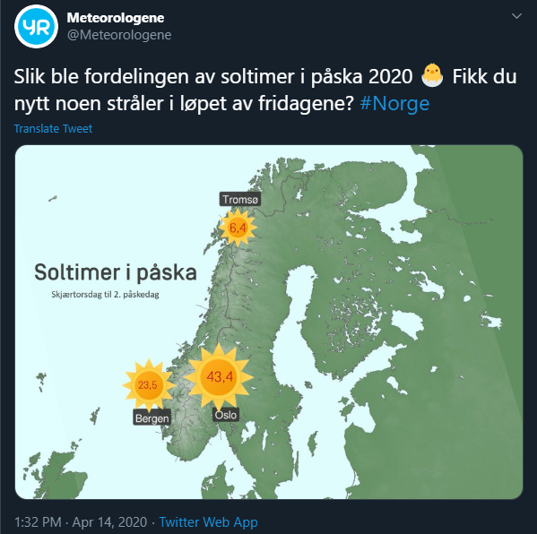
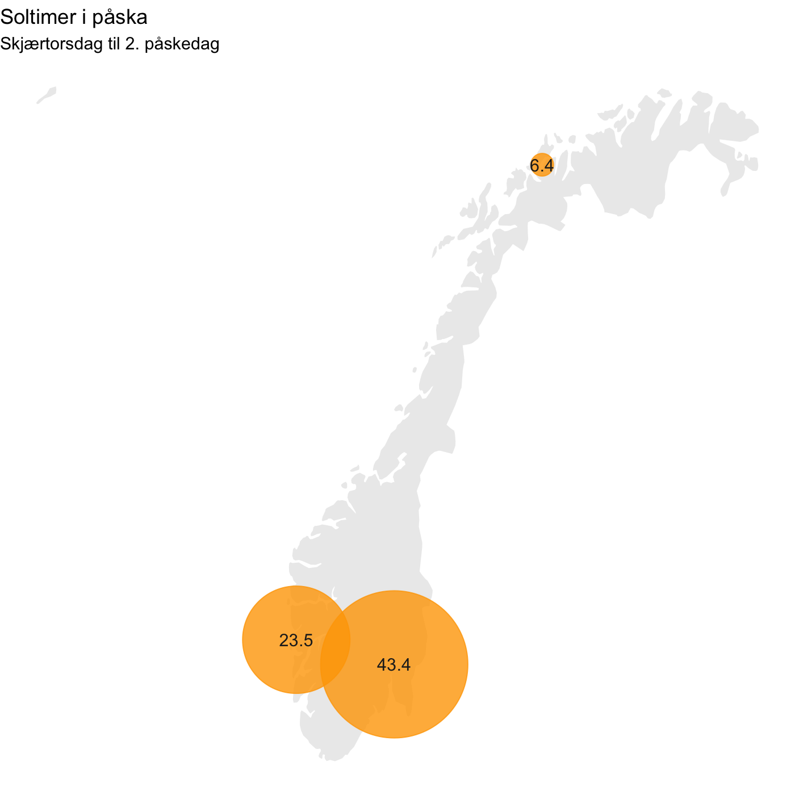
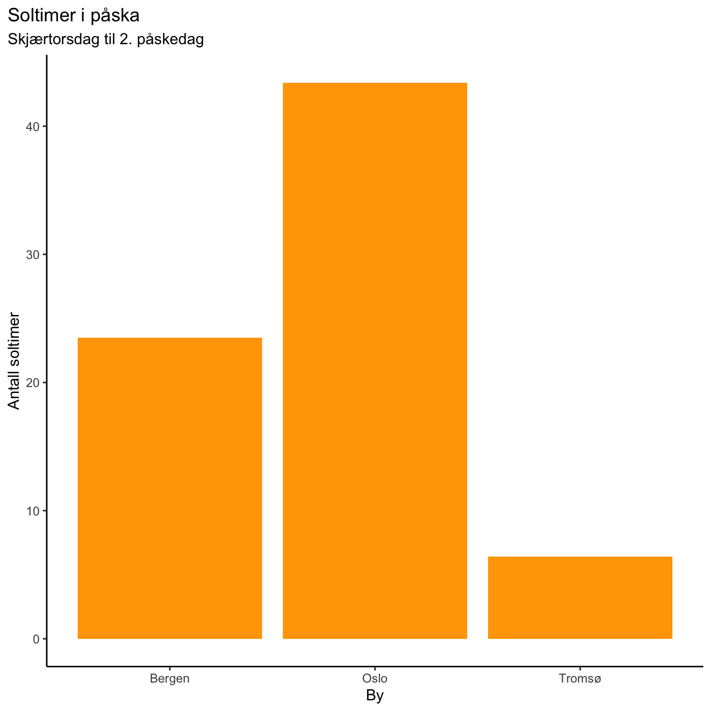

on
Soltimer Påsken 2020
Meteorologene på twitter skrev en tweet om hvor mange soltimer det hadde vært i påska.

Av bildet kan det se ut som om solene er skalert opp og ned basert på antall soltimer. Selv om Oslo har nesten 7 ganger så mange soltimer som Tromsø, virker det ikke som om at størrelsen på solene reflekterer dette. Her er et eksempel på hvordan man kunne lagd en lignende visualisering i R
Last inn nyttige pakker
library(ggplot2)
library(dplyr)
library(maps)
library(kableExtra)
Datasett
Her er dataene fritt gjenngitt fra tweet-en, samt deres sirkaposisjon som vi kan bruke til å tegne dem opp på et kart.
data = tibble(
city=c("Tromsø", "Bergen","Oslo"),
hours=c(6.4, 23.5, 43.4),
lat = c(69.65, 60.39, 59.91 ),
long = c(18.95, 5.32, 10.75))
kable(data, format="markdown")
| city | hours | lat | long |
|---|---|---|---|
| Tromsø | 6.4 | 69.65 | 18.95 |
| Bergen | 23.5 | 60.39 | 5.32 |
| Oslo | 43.4 | 59.91 | 10.75 |
Kart
Og disse kan vi så tegne opp på et kart, hvor vi bruker antall soltimer til å skalere en sirkel som vi tegner oppå byen de hører til.
norway <- map_data("world") %>%
filter(region == "Norway") %>%
filter(lat < 72)
ggplot() +
geom_polygon(data = norway,
aes(x=long,y = lat, group = group),
fill="grey", alpha=0.3) +
geom_point(data = data,
aes(x=long,y=lat, size=hours),
color="orange",
alpha = 0.8,
show.legend = F) +
geom_text(data = data,
aes(x=long, y=lat, label=hours),
color="#222222") +
scale_size(range = c(6.4, 43.4)) +
theme(legend.position="none") +
labs(title="Soltimer i påska", subtitle="Skjærtorsdag til 2. påskedag") +
theme_void()

Og nå ser det ut som om Tromsø har fått vesentlig mindre sol enn Oslo i påska.
Et annet alternativ, hvis man ikke ønsker å vise dataene på et kart, kunne vært et helt vanlig stolpediagram.
data %>%
ggplot(aes(x=city, y=hours)) +
geom_bar(stat="identity",fill="orange") +
xlab("By") +
ylab("Antall soltimer") +
labs(title="Soltimer i påska", subtitle="Skjærtorsdag til 2. påskedag") +
theme_classic() +
theme(plot.title.position = "plot")
